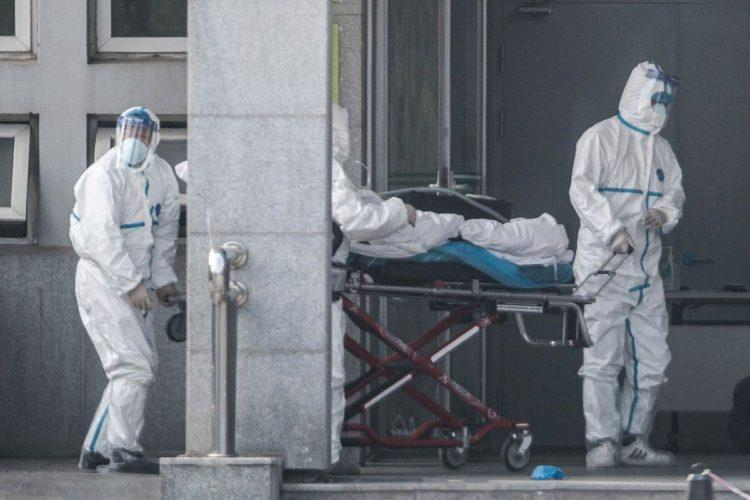
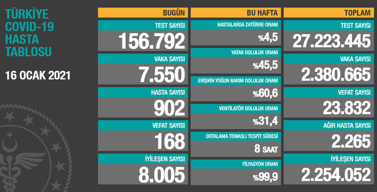

Korona Nasıl Başladı?
Virüs Çin sınırlarını aşıyor
Yaklaşık üç ay önce Çin’de ortaya çıkan yeni
koronavirüs kısa süre içinde bütün dünyaya yayıldı ve bütün
toplumların hayatını değiştirdi. Peki koronavirüs salgını nasıl ortaya çıktı? Hangi aşamalardan geçti ve önemli tarihler
nelerdi? Kronolojik olarak olayları hatırladığımız derleme haberimizde bu soruların cevaplarını aktarıyoruz.
Yetkililer ilk olarak 31 Aralık 2019 günü Çin’in 11 milyon nüfusa sahip kenti Vuhan’da 41 kişide zatürre benzeri bir hastalık olduğunu
bildirmişti. Ancak daha sonra bunun zatürreye neden olan bir virüs olmadığı anlaşıldı. Yeni bir virüsten kaynaklandığı belirlenen hastalık hızla yayılmaya başladı.
ABD Hastalık Koruma ve Korunma Merkezi, 1 Ocak 2020’de yaptığı açıklamada virüsün Vuhan’daki bir deniz ürünleri pazarından kaynaklanıyor
olabileceğini açıklarken hemen akabinde bu pazar kapatıldı. 3 Ocak günü Vuhan’a gelen ve Vuhan’dan giden yolculara havaalanlarında sağlık
kontrolleri uygulanmaya başlandı. İki gün sonra Dünya Sağlık Örgütü (DSÖ) bir açıklama yaparak Çin’e seyahatleri durdurmaya gerek olmadığını
söyledi.
Ocak 2020’de Çinli yetkililer sözkonusu virüsün zatürreye neden olan bir virüs olmayıp yeni bir virüs çeşidi olduğunu resmen açıkladı. Doğrudan
solunum yollarını etkileyen bu virüsün ismi 2019-nCoV olarak açıklandı. Bu yeni virüs de tıpkı SARS ve MERS gibi koronavirüs familyasındandı.
11 Ocak 2020 tarihinde ise hastalık yüzünden gerçekleşen ilk ölüm haberi geldi. 27 Aralık günü Vuhan’daki bir hastaneye kaldırılan 61 yaşındaki
bir Çin Halk Cumhuriyeti vatandaşı hayatını kaybetti.

Virüs Çin sınırlarını aşıyor
13 Ocak günü Tayland hükümeti Vuhan’dan ülkelerine gelen Çinli bir kadında da koronavirüs çıktığını duyurdu. 15 Ocak günü ise Japonya da ülkesindeki
ilk koronavirüs vakasını doğruladı. Böylece koronavirüs vakaları artık Çin sınırını aşmaya başladı. 20 Ocak’ta Çin’deki üçüncü ölüm vakası gerçekleşirken
virüs Güney Kore’ye de sıçradı. Bir gün sonra ise aynı virüs bu kez ABD’de ve Avustralya’da tespit edildi.
22 Ocak’ta hastalıktan dolayı Çin’de ölenlerin sayısı 17’ye, toplam vaka sayısı da 547’ye ulaşınca Vuhan kentinin geçici bir süreliğine ulaşıma kapatıldığı duyuruldu.
DSÖ ise 23 Ocak günü gerçekleştirdiği toplantıda salgının henüz “uluslararası kamu sağlığı acil durumu” ilan edilecek noktaya gelmediğini bildirdi.
30 Ocak günü ABD ülke içindeki temaslardan kaynaklanan ilk koronavirüs vakasını açıklarken DSÖ, Çin dışında 18 ülkede 98 vaka tespit edildiğini ancak hayatını kaybeden
olmadığını açıkladı. Aynı gün İsviçre’nin Cenevre kentinde yapılan basın toplantısında DSÖ Genel Direktörü Tedros Adhanom Ghebreyesus, küresel ölçekte acil durum ilan
edildiğini açıklarken bunun nedeninin “Çin’de değil, diğer ülkelerde yaşananlar” olduğunu söyledi ve asıl endişenin virüsün sağlık sistemleri zayıf ülkelere yayılması olduğunu belirtti.
Aynı gün Çin’de koronavirüs nedeniyle hayatını kaybedenlerin sayısı 213’e ulaştı. Ocak ayı sonuna doğru pek çok ülke kendi sınırları içinde de koronavirüs vakalarının
görülmeye başlandığını açıkladı. 23 Ocak’ta Singapur, 25 Ocak’ta Nepal ve Kanada, 27 Ocak’ta ise Sri Lanka’dan üst üste aynı sonucu açıklayan beyanlar gelirken 28 Ocak’ta
Almanya, Tayvan ve Japonya gibi ülkeler de resmî olarak ülke içindeki temaslardan kaynaklanan ilk koronavirüs vakalarının gerçekleştiğini bildirdi.
Burası Türkiye... Koronavirüs aşısıyla ilgili çok güzel haber!
Koronavirüsle(corona virüs) mücadele kapsamında başlatılan aşı uygulamasının üçüncü gününde, toplam aşılanan sağlık çalışanı sayısı hızla 700 bine yaklaşıyor. İlk dozun uygulanmasından 28 gün sonra aşının ikinci dozu uygulanacak. MHRS ve e-Nabız hesabı üzerinden randevu kontrol edilebilecek veya değiştirilebilecek.
16 Ocak korona tablosu ve vaka sayısı Sağlık Bakanlığı tarafından açıklandı!
Sağlık Bakanlığı, Türkiye günlük koronavirüs tablosunu açıkladı. Vaka sayısında düşüşün hızla devam ettiği görülürken, iyileşen sayısı ise artıyor. Son 24 saatte, 156 bin 792 Kovid-19 testi yapıldı, 7 bin 550 kişinin testi pozitif çıktı.